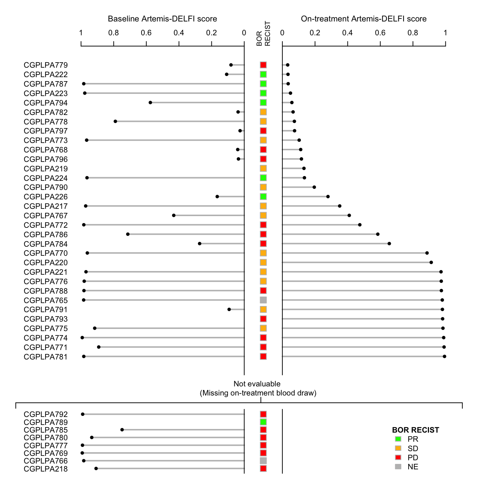

Last updated: 2025-03-28
Checks: 7 0
Knit directory: hruban_wflow/
This reproducible R Markdown analysis was created with workflowr (version 1.7.1). The Checks tab describes the reproducibility checks that were applied when the results were created. The Past versions tab lists the development history.
Great! Since the R Markdown file has been committed to the Git repository, you know the exact version of the code that produced these results.
Great job! The global environment was empty. Objects defined in the global environment can affect the analysis in your R Markdown file in unknown ways. For reproduciblity it’s best to always run the code in an empty environment.
The command set.seed(20250319) was run prior to running
the code in the R Markdown file. Setting a seed ensures that any results
that rely on randomness, e.g. subsampling or permutations, are
reproducible.
Great job! Recording the operating system, R version, and package versions is critical for reproducibility.
Nice! There were no cached chunks for this analysis, so you can be confident that you successfully produced the results during this run.
Great job! Using relative paths to the files within your workflowr project makes it easier to run your code on other machines.
Great! You are using Git for version control. Tracking code development and connecting the code version to the results is critical for reproducibility.
The results in this page were generated with repository version 03bf6cf. See the Past versions tab to see a history of the changes made to the R Markdown and HTML files.
Note that you need to be careful to ensure that all relevant files for
the analysis have been committed to Git prior to generating the results
(you can use wflow_publish or
wflow_git_commit). workflowr only checks the R Markdown
file, but you know if there are other scripts or data files that it
depends on. Below is the status of the Git repository when the results
were generated:
Ignored files:
Ignored: .DS_Store
Ignored: code/process_tcga_beta.html
Ignored: code/rlucas/.DS_Store
Ignored: data/estimates/.Rapp.history
Untracked files:
Untracked: code/pivot_wider_pacto.R
Untracked: code/process_ab_v0.Rmd
Untracked: data/allfeatures_pacto.5mb.hg19.csv
Untracked: data/paad_bins_100kb_sel_chr.rds
Untracked: extdata/
Unstaged changes:
Modified: README.Rmd
Modified: analysis/ext-fig9.Rmd
Modified: analysis/fig4.Rmd
Modified: code/process_tcga_beta.Rmd
Modified: output/process_tcga_beta.Rmd/paad_bins_100kb_sel_chr.rds
Note that any generated files, e.g. HTML, png, CSS, etc., are not included in this status report because it is ok for generated content to have uncommitted changes.
These are the previous versions of the repository in which changes were
made to the R Markdown (analysis/ext-fig10.Rmd) and HTML
(docs/ext-fig10.html) files. If you’ve configured a remote
Git repository (see ?wflow_git_remote), click on the
hyperlinks in the table below to view the files as they were in that
past version.
| File | Version | Author | Date | Message |
|---|---|---|---|---|
| Rmd | 935a46e | Shashikant Koul | 2025-03-28 | Fix patient order based on on-treatment dates |
| html | 935a46e | Shashikant Koul | 2025-03-28 | Fix patient order based on on-treatment dates |
| Rmd | 9bbcb47 | Shashikant Koul | 2025-03-27 | Initial commit |
| html | 9bbcb47 | Shashikant Koul | 2025-03-27 | Initial commit |
Patients are listed along vertical axis, separated into those that are evaluable by ARTEMIS-DELFI method at the follow up timepoint. Baseline ARTEMIS-DELFI score is plotted on the left side of the plot, with follow-up ARTEMIS-DELFI score on the right side of the plot. BOR RECIST 1.1 is shown, separated by color, in central panel.
library(tidyverse)
library(readxl)
library(here)
source(here("code/utility_funcs.R"))#----------------------------------------------------------------------------------
# Prepare the data
#----------------------------------------------------------------------------------
# Delfi scores
delfi_scr <- read_csv(here("data/artemis.csv")) %>%
left_join(read_excel(here("data/checkpac_plasma_manifest.xlsx"), col_type=c("text", "text", "text")) %>%
select(cgid = `Sample ID*`, patient_id = Patient, date_blood_draw = Date),
by = join_by(id == cgid)) %>%
select(patient_id, date_blood_draw, ARTEMIS_single_DELFI_SSLs_Ensemble) %>%
drop_na() %>%
mutate(date_blood_draw = as.Date(as.numeric(date_blood_draw), origin="1899-12-30"))Rows: 217 Columns: 4
── Column specification ────────────────────────────────────────────────────────
Delimiter: ","
chr (1): id
dbl (3): ARTEMIS_single_DELFI_SSLs_Ensemble, ARTEMIS_Ensemble, ARTEMIS_Mathi...
ℹ Use `spec()` to retrieve the full column specification for this data.
ℹ Specify the column types or set `show_col_types = FALSE` to quiet this message.# Best RECIST response
best_resp <- read_excel(here("data/CheckPAC_clinical_annotated011622.xlsx")) %>%
select(subject_id = StudySubjectID,
bor = `Best overall confirmed response (RECIST)`) %>%
inner_join(read_excel(here("data/ID_comparison.xlsx")) %>%
filter(!unlist(lapply(CGID, function(x) any(str_detect(x, c("CGPLPA225", "CGPLPA783", "CGPLPA795")))))) %>%
select(patient_id = CGID, subject_id = StudySubjectID) %>%
mutate(patient_id = substring(patient_id, 1, 9))) %>%
mutate(bor = ifelse(bor == "Not evaluable", "NE", bor)) Joining with `by = join_by(subject_id)`# Baseline and on-treatment blood draw dates
#blot_date <- read_csv(here("data/checkpac_baseline_endpoint_dates.csv"))
blot_date <- read_csv(here("data/checkpac_baseline_p2_dates.csv")) %>%
mutate(tx_start_date = as.Date(tx_start_date, "%m/%d/%y"),
ct_flwup_date = as.Date(ct_flwup_date, "%m/%d/%y"),
baseline = as.Date(baseline, "%m/%d/%y"),
endpoint = as.Date(endpoint, "%m/%d/%y"),
`week 2` = as.Date(`week 2`, "%m/%d/%y"))Rows: 40 Columns: 7
── Column specification ────────────────────────────────────────────────────────
Delimiter: ","
chr (6): patient_id, tx_start_date, ct_flwup_date, baseline, endpoint, week 2
lgl (1): ct_flwup
ℹ Use `spec()` to retrieve the full column specification for this data.
ℹ Specify the column types or set `show_col_types = FALSE` to quiet this message.#----------------------------------------------------------------------------------
# Patient selection for analysis
#----------------------------------------------------------------------------------
# (1) Patients with on-treatment Delfi score are kept in the analysis
anlys_pat <- pull(drop_na(blot_date, endpoint), patient_id)
lefto_pat <- setdiff(pull(blot_date, patient_id), anlys_pat)
# (2) Order patients based on baseline Delfi scores and on-treatment if baseline is NA
order_bas <- delfi_scr %>%
inner_join(blot_date %>%
select(patient_id, date_blood_draw=baseline) %>%
drop_na()) %>%
arrange(ARTEMIS_single_DELFI_SSLs_Ensemble) %>%
pull(patient_id)Joining with `by = join_by(patient_id, date_blood_draw)`order_ont <- delfi_scr %>%
inner_join(blot_date %>%
select(patient_id, date_blood_draw=endpoint) %>%
drop_na()) %>%
arrange(desc(ARTEMIS_single_DELFI_SSLs_Ensemble)) %>%
pull(patient_id)Joining with `by = join_by(patient_id, date_blood_draw)`# (3) Add the remaining patients without tumor mutations information
order_std <- c(setdiff(lefto_pat, order_ont), # patients without baseline or on-treatment score
intersect(order_ont, lefto_pat), # patients with baseline, but no on-treatment score
intersect(order_bas, setdiff(anlys_pat, order_ont)), # patients with no baseline, but on-treatment score
intersect(order_ont, anlys_pat)) # patients with both baseline and on-treatment score
# (4) Split the order into two groups
anlys_ord <- unlist(lapply(order_std, function(x) if(x %in% anlys_pat) x))
lefto_ord <- unlist(lapply(order_std, function(x) if(x %in% lefto_pat) x))
#----------------------------------------------------------------------------------
# Split the delfi score into baseline and on-treatment
#----------------------------------------------------------------------------------
delfi_scr_basl <- inner_join(delfi_scr, rename(drop_na(blot_date, baseline), date_blood_draw=baseline))Joining with `by = join_by(patient_id, date_blood_draw)`delfi_scr_ontr <- inner_join(delfi_scr, rename(drop_na(blot_date, endpoint), date_blood_draw=endpoint))Joining with `by = join_by(patient_id, date_blood_draw)`#----------------------------------------------------------------------------------
# Split the data into patients analyzed and left out
#----------------------------------------------------------------------------------
## Delfi score
### Baseline
delfi_scr_bsl1 <- left_join(tibble(patient_id = anlys_ord), delfi_scr_basl)Joining with `by = join_by(patient_id)`delfi_scr_bsl2 <- left_join(tibble(patient_id = lefto_ord), delfi_scr_basl)Joining with `by = join_by(patient_id)`### On-treatment
delfi_scr_ont1 <- left_join(tibble(patient_id = anlys_ord), delfi_scr_ontr)Joining with `by = join_by(patient_id)`delfi_scr_ont2 <- left_join(tibble(patient_id = lefto_ord), delfi_scr_ontr)Joining with `by = join_by(patient_id)`## Cellularity
bins <- seq(0,1,0.2); bins[length(bins)] <- bins[length(bins)]+1e-6
## Best response
best_resp_all1 <- left_join(tibble(patient_id = anlys_ord), best_resp)Joining with `by = join_by(patient_id)`best_resp_all2 <- left_join(tibble(patient_id = lefto_ord), best_resp)Joining with `by = join_by(patient_id)`#----------------------------------------------------------------------------------
# Plotting presets
#----------------------------------------------------------------------------------
## Panel widths
w1 <- 3; w2 <- 17; w5 <- 2; w6 <- 17
## Panel heights
h1 <- 33-1 # analyzed samples
#h2 <- 7-1 # left out samples
h2 <- 7.5
## Panel margins
tp <- 5 # top margin
bt <- 2 # bottom margin
r12 <- 1/3 #h2/h1
## Y-axis extension
yex <- 2
## Fix the layout
lay.mat <- layout.matrix(c(h1,h2), c(w1,w2,w5,w6))
layout(lay.mat)
par(oma=c(1,0,0,0)) # Thin outer margins
# Text size
xaxis.cex <- 0.7
xaxis.spine.cex <- 0.6
## Best response
resp_palette <- c("green", "darkgoldenrod1", "red", "grey")
names(resp_palette) <- c("PR", "SD", "PD", "NE")
best_resp_col1 <- resp_palette[best_resp_all1$bor]
best_resp_col2 <- resp_palette[best_resp_all2$bor]
#----------------------------------------------------------------------------------
# Empty plot
#----------------------------------------------------------------------------------
## ANALYZED panel
par(mar=c(bt,0,tp,2))
# Make the horizontal bars for tumor mutations
ytick1 <- barplot(rep(NA, length(anlys_ord)), horiz=TRUE, axes=FALSE, width=0.8, space=0.25,
ylim=c(0.6-yex, length(anlys_ord)-0.4+yex),
xlim=c(-10,0),
col=NA, border=NA,
yaxs="i")
# Adding y-axis on the right
axis(4, at=ytick1, labels=anlys_ord, line=-0.5, las=2, lwd=0, font=1)
## LEFT OUT panel
par(mar=c(r12*bt,0,r12*tp,2))
# Make the horizontal bars for tumor mutations
ytick2 <- barplot(rep(NA, length(lefto_ord)), horiz=TRUE, axes=FALSE, width=0.8, space=0.25,
ylim=c(0.6-r12*yex, length(lefto_ord)-0.4+r12*yex),
xlim=c(-10,0),
col=NA, border=NA,
yaxs="i")
# Adding y-axis on the right
axis(4, at=ytick2, labels=lefto_ord, line=-0.5, las=2, lwd=0, font=1)
#-----------------------------------------------------------
# Baseline MAF
#----------------------------------------------------------------------------------
breaks <- pretty(c(delfi_scr_basl$ARTEMIS_single_DELFI_SSLs_Ensemble, delfi_scr_ontr$ARTEMIS_single_DELFI_SSLs_Ensemble))
## ANALYZED panel
par(mar=c(bt,4,tp,0))
# Make the lollipop plot
# Empty plot - draw the points on top of sticks
plot(x = -delfi_scr_bsl1$ARTEMIS_single_DELFI_SSLs_Ensemble, y = c(1:nrow(delfi_scr_bsl1)), bty="n", axes=FALSE,
xlab = "", ylab = "", pch = NA, xlim = sort(-range(breaks)), cex=2,
ylim = c(1-yex, nrow(delfi_scr_bsl1)+yex),
yaxs="i")
# Draw the sticks
sapply(1:nrow(delfi_scr_bsl1), function(i) {
lines(c(-delfi_scr_bsl1$ARTEMIS_single_DELFI_SSLs_Ensemble[c(1:nrow(delfi_scr_bsl1)) == i], 0), c(i,i),
col="grey", lwd=2)})[[1]]
NULL
[[2]]
NULL
[[3]]
NULL
[[4]]
NULL
[[5]]
NULL
[[6]]
NULL
[[7]]
NULL
[[8]]
NULL
[[9]]
NULL
[[10]]
NULL
[[11]]
NULL
[[12]]
NULL
[[13]]
NULL
[[14]]
NULL
[[15]]
NULL
[[16]]
NULL
[[17]]
NULL
[[18]]
NULL
[[19]]
NULL
[[20]]
NULL
[[21]]
NULL
[[22]]
NULL
[[23]]
NULL
[[24]]
NULL
[[25]]
NULL
[[26]]
NULL
[[27]]
NULL
[[28]]
NULL
[[29]]
NULL
[[30]]
NULL
[[31]]
NULL
[[32]]
NULL# Draw the heads
points(x=-delfi_scr_bsl1$ARTEMIS_single_DELFI_SSLs_Ensemble, y=1:nrow(delfi_scr_bsl1), pch=16)
# Draw y-axis using abline
abline(v=0, lwd=1)
# Draw x-axis at the top
axis(3, at=-breaks, labels=breaks, lwd=1, font=1)
mtext("Baseline Artemis-DELFI score", 3, cex=xaxis.cex, line=2.5)
## LEFT OUT panel
par(mar=c(r12*bt,4,r12*tp,0))
# Make the lollipop plot
# Empty plot - draw the points on top of sticks
plot(x = delfi_scr_bsl2$ARTEMIS_single_DELFI_SSLs_Ensemble, y = c(1:nrow(delfi_scr_bsl2)), bty="n", axes=FALSE,
xlab = "", ylab = "", pch = NA, xlim = sort(-range(breaks)), cex=2,
ylim = c(1-r12*yex, nrow(delfi_scr_bsl2)+r12*yex),
yaxs="i")
# Draw the sticks
sapply(1:nrow(delfi_scr_bsl2), function(i) {
lines(c(-delfi_scr_bsl2$ARTEMIS_single_DELFI_SSLs_Ensemble[c(1:nrow(delfi_scr_bsl2)) == i], 0), c(i,i),
col="grey", lwd=2)})[[1]]
NULL
[[2]]
NULL
[[3]]
NULL
[[4]]
NULL
[[5]]
NULL
[[6]]
NULL
[[7]]
NULL
[[8]]
NULL# Draw the heads
points(x=-delfi_scr_bsl2$ARTEMIS_single_DELFI_SSLs_Ensemble, y=1:nrow(delfi_scr_bsl2), pch=16)
# Draw y-axis using abline
abline(v=0, lwd=1)
# Draw x-axis at the top
#axis(3, at=-breaks, labels=breaks, lwd=1, font=1)
#mtext("Baseline DELFI score", 3, cex=xaxis.cex, line=2.5)
#----------------------------------------------------------------------------------
# Best RECIST response
#----------------------------------------------------------------------------------
## ANALYZED panel
par(mar=c(bt,0,tp,0))
plot(x=rep(0, nrow(best_resp_all1)), y=1:nrow(best_resp_all1),
pch=22, col="grey", bg=best_resp_col1,
bty="n", axes=FALSE, xlab="", ylab="", cex=2, font=1,
ylim = c(1-yex, nrow(best_resp_all1)+yex),
yaxs="i")
mtext("BOR\nRECIST", 3, las=2, cex=xaxis.spine.cex)
## LEFT OUT panel
par(mar=c(r12*bt,0,r12*tp,0))
plot(x=rep(0, nrow(best_resp_all2)), y=1:nrow(best_resp_all2),
pch=22, col="grey", bg=best_resp_col2,
bty="n", axes=FALSE, xlab="", ylab="", cex=2, font=1,
ylim = c(1-r12*yex, nrow(best_resp_all2)+r12*yex),
yaxs="i")
#mtext("BOR\nRECIST", 3, las=2, cex=xaxis.spine.cex)
#----------------------------------------------------------------------------------
# On-treatment MAF
#----------------------------------------------------------------------------------
breaks <- pretty(c(delfi_scr_basl$ARTEMIS_single_DELFI_SSLs_Ensemble, delfi_scr_ontr$ARTEMIS_single_DELFI_SSLs_Ensemble))
## ANALYZED panel
par(mar=c(bt,0,tp,4))
# Make the lollipop plot
# Empty plot - draw the points on top of sticks
plot(x = delfi_scr_ont1$ARTEMIS_single_DELFI_SSLs_Ensemble, y = c(1:nrow(delfi_scr_ont1)), bty="n", axes=FALSE,
xlab = "", ylab = "", pch = NA, xlim = range(breaks), cex=2,
ylim = c(1-yex, nrow(delfi_scr_ont1)+yex),
yaxs="i")
# Draw the sticks
sapply(1:nrow(delfi_scr_ont1), function(i) {
lines(c(0,delfi_scr_ont1$ARTEMIS_single_DELFI_SSLs_Ensemble[c(1:nrow(delfi_scr_ont1)) == i]), c(i,i),
col="grey", lwd=2)})[[1]]
NULL
[[2]]
NULL
[[3]]
NULL
[[4]]
NULL
[[5]]
NULL
[[6]]
NULL
[[7]]
NULL
[[8]]
NULL
[[9]]
NULL
[[10]]
NULL
[[11]]
NULL
[[12]]
NULL
[[13]]
NULL
[[14]]
NULL
[[15]]
NULL
[[16]]
NULL
[[17]]
NULL
[[18]]
NULL
[[19]]
NULL
[[20]]
NULL
[[21]]
NULL
[[22]]
NULL
[[23]]
NULL
[[24]]
NULL
[[25]]
NULL
[[26]]
NULL
[[27]]
NULL
[[28]]
NULL
[[29]]
NULL
[[30]]
NULL
[[31]]
NULL
[[32]]
NULL# Draw the heads
points(x=delfi_scr_ont1$ARTEMIS_single_DELFI_SSLs_Ensemble, y=1:nrow(delfi_scr_ont1), pch=16)
# Draw y-axis using abline
abline(v=0, lwd=1)
# Draw x-axis at the top
axis(3, at=breaks, labels=breaks, lwd=1, font=1)
mtext("On-treatment Artemis-DELFI score", 3, cex=xaxis.cex, line=2.5)
## LEFT OUT panel
par(mar=c(r12*bt,0,r12*tp,4))
# Make the lollipop plot
# Empty plot - draw the points on top of sticks
plot(x = delfi_scr_ont2$ARTEMIS_single_DELFI_SSLs_Ensemble, y = c(1:nrow(delfi_scr_ont2)), bty="n", axes=FALSE,
xlab = "", ylab = "", pch = NA, xlim = range(breaks), cex=2,
ylim = c(1-r12*yex, nrow(delfi_scr_ont2)+r12*yex),
yaxs="i")
# Draw the sticks
sapply(1:nrow(delfi_scr_ont2), function(i) {
lines(c(0,delfi_scr_ont2$ARTEMIS_single_DELFI_SSLs_Ensemble[c(1:nrow(delfi_scr_ont2)) == i]), c(i,i),
col="grey", lwd=2)})[[1]]
NULL
[[2]]
NULL
[[3]]
NULL
[[4]]
NULL
[[5]]
NULL
[[6]]
NULL
[[7]]
NULL
[[8]]
NULL# Draw the heads
points(x=delfi_scr_ont2$ARTEMIS_single_DELFI_SSLs_Ensemble, y=1:nrow(delfi_scr_ont2), pch=16)
# Draw y-axis using abline
abline(v=0, lwd=1)
#----------------------------------------------------------------------------------
# Adding floating legend for BOR
#----------------------------------------------------------------------------------
add.legend(title="BOR RECIST", x=0.65, y=6, xadj=0.022,
labels=names(resp_palette), col_palette=resp_palette, border="grey")
#----------------------------------------------------------------------------------
# Draw x-axis at the top
#axis(3, at=breaks, labels=breaks, lwd=1, font=1)
#mtext("On-treatment DELFI score", 3, cex=xaxis.cex, line=2.5)
#----------------------------------------------------------------------------------
# Annotations
#----------------------------------------------------------------------------------
par(fig=c(0,1,0,1), mar=c(0,1,0,1), new=TRUE)
# Samples that were dropped from the analysis, because of missing data
plot(c(-10,10), 15*c(1,1), col=NA, axes=FALSE, xpd=TRUE)
text(0.63,11.00, "Not evaluable \n(Missing on-treatment blood draw)", adj=0.5)
draw.bracket(0.75,10.60,-10.5,10)
#----------------------------------------------------------------------------------
sessionInfo()R version 4.4.1 (2024-06-14)
Platform: aarch64-apple-darwin20
Running under: macOS 15.3.1
Matrix products: default
BLAS: /Library/Frameworks/R.framework/Versions/4.4-arm64/Resources/lib/libRblas.0.dylib
LAPACK: /Library/Frameworks/R.framework/Versions/4.4-arm64/Resources/lib/libRlapack.dylib; LAPACK version 3.12.0
locale:
[1] en_US.UTF-8/en_US.UTF-8/en_US.UTF-8/C/en_US.UTF-8/en_US.UTF-8
time zone: America/New_York
tzcode source: internal
attached base packages:
[1] stats graphics grDevices utils datasets methods base
other attached packages:
[1] here_1.0.1 readxl_1.4.5 lubridate_1.9.4 forcats_1.0.0
[5] stringr_1.5.1 dplyr_1.1.4 purrr_1.0.4 readr_2.1.5
[9] tidyr_1.3.1 tibble_3.2.1 ggplot2_3.5.1 tidyverse_2.0.0
[13] workflowr_1.7.1
loaded via a namespace (and not attached):
[1] sass_0.4.9 generics_0.1.3 stringi_1.8.4 hms_1.1.3
[5] digest_0.6.37 magrittr_2.0.3 timechange_0.3.0 evaluate_1.0.3
[9] grid_4.4.1 fastmap_1.2.0 cellranger_1.1.0 rprojroot_2.0.4
[13] jsonlite_1.9.1 processx_3.8.6 whisker_0.4.1 ps_1.9.0
[17] promises_1.3.2 httr_1.4.7 scales_1.3.0 jquerylib_0.1.4
[21] cli_3.6.4 crayon_1.5.3 rlang_1.1.5 bit64_4.6.0-1
[25] munsell_0.5.1 withr_3.0.2 cachem_1.1.0 yaml_2.3.10
[29] parallel_4.4.1 tools_4.4.1 tzdb_0.4.0 colorspace_2.1-1
[33] httpuv_1.6.15 vctrs_0.6.5 R6_2.6.1 lifecycle_1.0.4
[37] git2r_0.35.0 bit_4.6.0 fs_1.6.5 vroom_1.6.5
[41] pkgconfig_2.0.3 callr_3.7.6 pillar_1.10.1 bslib_0.9.0
[45] later_1.4.1 gtable_0.3.6 glue_1.8.0 Rcpp_1.0.14
[49] xfun_0.51 tidyselect_1.2.1 rstudioapi_0.17.1 knitr_1.49
[53] htmltools_0.5.8.1 rmarkdown_2.29 compiler_4.4.1 getPass_0.2-4